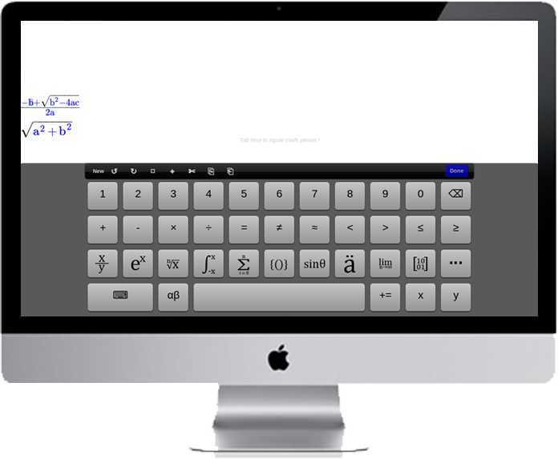
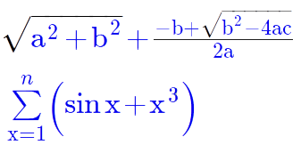
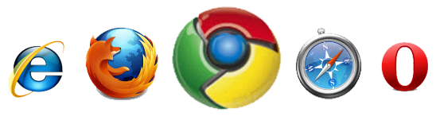

Introduction
JsMath is a project that intent to make Math communication easier on web.
Easy Math Input
JsMath prodives a WYSIWYG way to input math formula. The visual keyboard provides the most math formula structure you need.
2D Math Display
JsMath prodives the 2D math display, just like the math formula structure as you know.
Cross Browsers
JsMath prodives the cross-browsers support. From Chrome to Opera and more other browsers.
Cross Devices
JsMath prodives the cross-devices support. From desk PC to mobile smart phone.
Easy to use
JsMath prodives a easy way to be used, just 3 lines of "<script .../>" will enable your Web page or Web App surpport Math Input and display.
Installation
It is very easy to inatll JaMath, the demo pages as following:
JsMath for PC/Tablet browsers:
<!DOCTYPE html> <html lang="en"> <head> <meta charset="utf-8"> <title>Welcome to use JsMath!</title> <!-- the following 3 lines is to install JsMath --> <script type="text/javascript" src="http://cdn.mathjax.org/mathjax/latest/MathJax.js?config=TeX-AMS-MML_HTMLorMML"></script> <script type="text/javascript" src="http://code.jquery.com/jquery-1.8.0.min.js"></script> <script type="text/javascript" src="http://js2math.github.com/JsMath/jsmath.tablet.js"></script> </head> <body> <!-- this is the Math container, which needs a id start with mathInput- --> <div id="mathInput-1"> You can input math here, tab to start. </div> <!-- this is another Math container, which needs a id start with mathInput- --> <div id="mathInput-2"></div> <!-- this is another Math container, which needs a id start with mathInput- --> <span id="mathInput-span"></span> </body> </html>run
JsMath for Mobile browsers:
<!DOCTYPE html> <html lang="en"> <head> <meta charset="utf-8"> <title>Welcome to use JsMath!</title> <!-- the following 3 lines is to install JsMath --> <script type="text/javascript" src="http://cdn.mathjax.org/mathjax/latest/MathJax.js?config=TeX-AMS-MML_HTMLorMML"></script> <script type="text/javascript" src="http://code.jquery.com/jquery-1.8.0.min.js"></script> <script type="text/javascript" src="http://js2math.github.com/JsMath/jsmath.phone.js"></script> </head> <body> <!-- this is the Math container, which needs a id start with mathInput- --> <div id="mathInput-1"> You can input math here, tab to start. </div> <!-- this is another Math container, which needs a id start with mathInput- --> <div id="mathInput-2"></div> <!-- this is another Math container, which needs a id start with mathInput- --> <span id="mathInput-span"></span> </body> </html>run
Copyright © 2012. All Rights Reserved.